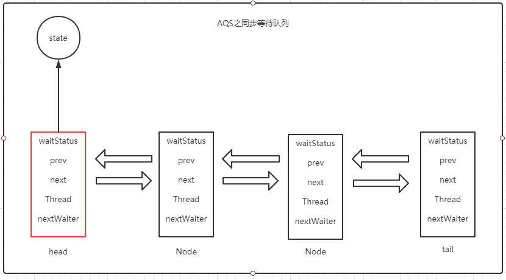

一、AQS是什么
AQS(AbstractQueuedSynchronizer):顾名思义是一个抽象队列同步器。在JDK5 之后的 java.util.concurrent 下的的很多常用的多线程工具类都依赖这个类。
面试常考的点，也是学习多线程必掌握的知识点。
看JDK源码注释说，AQS是基于CLH自旋锁变种的一个虚拟的双向队列，而队列一般都是先进先出(First Input First Output)。
CLH是一种基于链表的可扩展、高性能、公平的自旋锁，申请线程只在本地变量上自旋，它不断轮询前驱的状态，如果发现前驱释放了锁就结束自旋。
大概长下面这样子：
head | | <---- | | <---- | | tail
+------+ +-----+ +-----+
直白点说AQS就是一个框架，具体资源的获取/释放方式交由我们自定义同步器去实现。AQS定义两种资源方式：Exclusive 独占资源（ReentrantLock）、Share 共享资源（Semaphore/CountDownLatch）
框架的两大核心：同步等待队列和条件等待队列。虽然有两个队列，但我们不一定都用得到，所以它的获取/释放方法没有定义成abstract。自定义同步器在实现时只需要实现共享资源 state的获取与释放方式即可，至于具体线程等待队列的维护（如获取资源失败入队/唤醒出队等），AQS 已经在顶层实现好了。
我们自定义的同步器主要实现一下方法：
- 1．isHeldExclusively()：
该线程是否正在独占资源。只有用到 condition 才需要去实现它。 - 2．tryAcquire(int)：
独占方式。尝试获取资源，成功则返回 true，失败则返回 false。 - 3．tryRelease(int)：
独占方式。尝试释放资源，成功则返回 true，失败则返回 false。 - 4．tryAcquireShared(int)：
共享方式。尝试获取资源。负数表示失败；0 表示成功，但没有剩余可用资源；正数表示成功，且有剩余资源。 - 5．tryReleaseShared(int)：
共享方式。尝试释放资源，如果释放后允许唤醒后续等待结点返回true，否则返回 false。
二、AQS之队列同步器
这篇文章主要讲独占模式，不讲共享模式和Condition 部分
- 队列同步器大致的运行过程：
当线程去请求的共享资源空闲就把当前请求线程设为工作线程并把状态标记为锁定状态。如果此时有其他线程进来看到状态为锁定，就会按顺序放入到同步等待队列中自旋挂起。当此时的工作线程执行结束后，又唤醒队列的第一个节点，因为是自旋挂起的，当唤醒的时候就会去更新状态锁，重复之前线程的操作。我们可以理解为头节点(Head)就是持有锁的工作线程。
这个队列同步器是由AQS静态内部类Node组成的双向链表.当一个线程去请求同步状态时失败的时候就会生成一个Node节点加入同步等待队列中。
条件等待队列下一篇在讲
Node的重要属性如下：
| 属性名 | 作用 |
|---|---|
| Node prev | 同步队列中，当前节点的前一个节点，如果当前节点是同步队列的头结点，那么prev属性为null |
| Node next | 同步队列中，当前节点的后一个节点，如果当前节点是同步队列的尾结点，那么next属性为null |
| Node thread | 当前节点代表的线程，如果当前线程获取到了锁，那么当前线程所代表的节点一定处于同步队列的队首，且thread属性为null，至于为什么要将其设置为null，当获取到锁的时候已经把当前线程设置为持有锁的线程（setExclusiveOwnerThread），所以节点的thread就可以设置为null了。 |
| int waitStatus | 当前线程的等待状态，有5种取值。0表示初始值，1表示线程被取消，-1表示当前线程处于等待状态，-2表示节点处于条件等待队列中，-3表示下一次共享式同步状态获取将会无条件地被传播下去 |
| Node nextWaiter | 在条件等待队列中，该节点的下一个节点，单单在同步等待队列中没有用到 |
通过Node的prev属性和next属性就构成了一个双向链表，也就是AQS中的同步队列，但是想要通过这个队列找到队列中的每一个元素，我们就需要知道这个队列的头结点是谁，尾结点是谁。因此AQS中又提供了两个属性：head和tail，这两个属性的类型均是Node类型，它们分别指向同步队列中的头结点和尾结点。这样AQS就能通过head和tail，找到队列中的每一个元素。同步队列的结构示意图如下。

第一次初始化时，
head=tail=new Node()头尾都等于一个空属性的节点。同步等待队列是不包含 head 节点，因为head是持有锁的工作线程不需要等待。
3、源码分析
如果直接讲AbstractQueuedSynchronizer 的源码可能有点不知道从哪讲好，所以通过一个Demo来进行分析。Demo如下：
package com.amico.contract.trade.controller; |
以ReentrantLock类demo来分析AQS源码，lock()上锁，unlock() 解锁。lock()方法调用的是ReentrantLock抽象静态内部类Sync的lock()方法。
static final class FairSync extends Sync { |
而Sync继承了AbstractQueuedSynchronizer，最终调用的是AQS的acquire(int)方法。代码如下：
public final void acquire(int arg) { |
acquire方法的代码很少功能却很强大复杂,这个方法其实可以拆成4个方法：
- 调用tryAcquire()方法
- 执行addWaiter()方法
- 执行acquireQueued()方法
- 执行selfInterrupt()方法。
acquire方法
先说说acquire(int) 方法的总体功能与流程，看代码注释：
/* |
tryAcquire 方法
先看上面代码的注释，接下来分析tryAcquire(arg) 方法，源码如下：
protected final boolean tryAcquire(int acquires) { |
addWaiter 方法
之前也分析了，这个方法不一定会执行，得看!tryAcquire(arg) 是否是true。看方法名就猜到应该是把线程封装成Node节点添加到队列中等待执行。来看源码：
private Node addWaiter(Node mode) { |
来看看end方法的代码：
private Node enq(final Node node) { |
acquireQueued 方法
没有获取到锁就没法执行，一直等到获取到锁了才行执行。那如何让线程等待呢，就是这个方法里面的代码，源码如下：
final boolean acquireQueued(final Node node, int arg) { |
看完上面代码的注释，接下来看看shouldParkAfterFailedAcquire方法的源码：
private static boolean shouldParkAfterFailedAcquire(Node pred, Node node) { |
如果shouldParkAfterFailedAcquire 方法返回true,那就会调用parkAndCheckInterrupt方法使线程挂起。来看看源码：
private final boolean parkAndCheckInterrupt() { |
对于acquireQueued()方法而言，只有线程获取到了锁或者被中断，线程才会从这个方法里面返回，否则它会一直阻塞在里面。
如果在中途报异常了什么的，就会调用cancelAcquire方法，来看看做了什么操作
private void cancelAcquire(Node node) { |
selfInterrupt 方法
当线程从acquireQueued()方法处返回时，返回值有两种情况，如果返回false，表示线程不是被中断才唤醒的，所以此时在acquire()方法中，if判断不成立，就不会执行selfInterrupt()方法，而是直接返回。
如果返回true，则表示线程是被中断才唤醒的，由于在parkAndCheckInterrupt()方法中调用了Thread.interrupted()方法，会返回线程是否被中断过且清除中断标识，所以此时需要返回true，使acquire()方法中的if判断成立，然后这样就会调用selfInterrupt()方法，该方法会将中断标识重新设置为中断状态。
release 方法
lock()上完锁之后，还是得释放锁的，ReentrantLock的unlock()方法释放锁，最终调用的是FairSync的release()方法。release()方法是AQS里面的方法，源码如下：
public final boolean release(int arg) { |
在release()方法中会先调用AQS子类的tryRelease()方法，也就是调用ReentrantLock类中Sync的tryRelease()方法，该方法就是让当前线程释放锁。方法源码如下。
protected final boolean tryRelease(int releases) { |
之后来看看唤醒之后线程的方法unparkSuccessor，源码如下：
private void unparkSuccessor(Node node) { |
总结
- AQS中用state属性表示锁，如果能成功将state属性通过CAS操作从0设置成1即获取了锁
- 当线程抢到锁时将线程设置为持有锁线程setExclusiveOwnerThread，也就是Head节点
- 也就是说head节点的下一个节点，才是同步等待队列的第一个节点。
- tryAcquire() 尝试获取锁
- addWaiter() 把线程封装成Node节点添加到队列中等待执行
- acquireQueued() 如果没获取到锁，调用parkAndCheckInterrupt()挂起,自旋等待获取到锁或中断
- selfInterrupt() 此线程中断唤醒的，需要调此方法把中断标识重新设置为中断状态
- cancelAcquire() 移除CANCELLED状态的节点，更新队列的关联关系
- release() 释放锁，unparkSuccessor() 唤醒后续节点
本文主要分析了独占模式下的同步队列相关代码，防止篇幅过长，共享式的条件等待队列等等下篇继续。